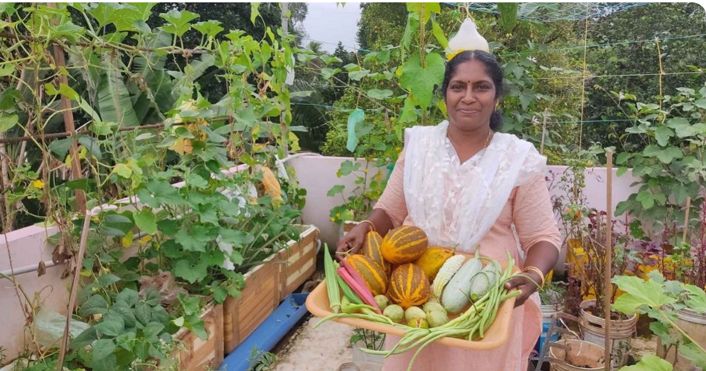
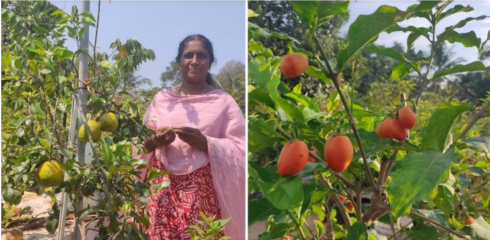

Teacher Shares How She Grew 100 Varieties of Organic Fruits & Veggies On Her Terrace
Bindu CK, a chemistry teacher from Kerala, shares how she grew different varieties of organic vegetables and fruits on her terrace, and how she maintains her home garden

The day starts early for Bindu CK — a teacher from Ayamanam in Kerala’s Kottayam district — who has been farming for the past year.
Unlike many who experimented with farming as a past-time during the COVID lockdown, for Bindu, it was more than a hobby. “I love farming,” she says enthusiastically, adding that she goes to her terrace to check on her vegetables and fruit trees as soon as she wakes up.
“I observe everything and spend some time on the terrace to see if something has flowered or withered,” Bindu tells The Better India.
Her terrace garden is just about 800 sq ft in area, but houses around 100 varieties of vegetables and 60 varieties of fruit trees, most of which are exotic
From chillies to oranges

When Bindu and her family moved to their new house last year, she was happy that she could find space on the terrace to set up a vegetable garden. “Our old house had a tiled roof. So when we moved to our new house, I decided to make use of the terrace and grow veggies and fruits. While we have space around the house, I felt that there would be better yield on the terrace, and caring for my plants would also be easier,” she says.
Just some of the vegetables found in her garden include tomato, brinjal, cauliflower, chillies, spinach, salad cucumber, carrot, beans, beet root, and ladies finger. “I have around ten different varieties of chillies — capsicum, violet chilli, ujwala chilli, bajji chilli, and black chilli, as well as five types of bird’s eye chilli. Then there are eight types of brinjal, seven types of spinach, four types of ladies finger, and so on,” says Bindu, who also grows exotic vegetables like broccoli, zucchini, chinese cabbage, and kale.
She learnt how to grow the vegetables on her own, and collects seeds and saplings online, or from different nurseries. “I am a person who always stops at a nursery whenever I see one. So, I mostly collect the seeds and vegetables from nurseries. But for some exotic varieties like zucchini, I bought the seeds online,” she explains.
Bindu’s terrace garden is also home to several varieties of fruit trees. “I have a collection of exotic fruit trees like lilly pilly, Australian beach cherry, jaboticaba (Brazillian grapetree), jungle jalebi, Israelian fig, longan, and more. I also have fruits like orange, strawberries, dragon fruit, watermelon, star fruit, different types of guava, custard apple, cherries and mango,” she explains.
Fruits like oranges and strawberries, which grow in cold climates, are usually said to be difficult to grow in Kerala’s weather, she says, “But I wanted to experiment with them. I tried my luck and it turned out to be a success. I think hybrid varieties of oranges are able to adapt to hotter climates, like we have in Kerala,” she says, adding that the fruit trees only grow upto an optimum level, as they are not planted on land.

“For pesticides, I make a mix of neem oil, soap, and vinegar or soda powder, and then spray it on the plants,” she adds.
The fruit trees and vegetables are all grown in different types of containers and grow bags. “I can’t grow everything in grow bags as they don’t last for long. So I have started shifting everything to different types of containers like plastic paint buckets, thermocol boxes etc,” says Bindu, who waters her plants twice a day.
“The yield from the terrace garden is mostly used at home. If there are a lot of vegetables or fruits, then we give them out to friends or relatives. I am glad that I could grow chemical-free veggies and fruits,” she says.
Bindu also has a YouTube channel named ‘Chilli Jasmine’, where she gives out tips to her viewers on how to maintain a terrace garden. With over 1 lakh subscribers, her channel helps beginners who are attempting terrace farming.
.png)